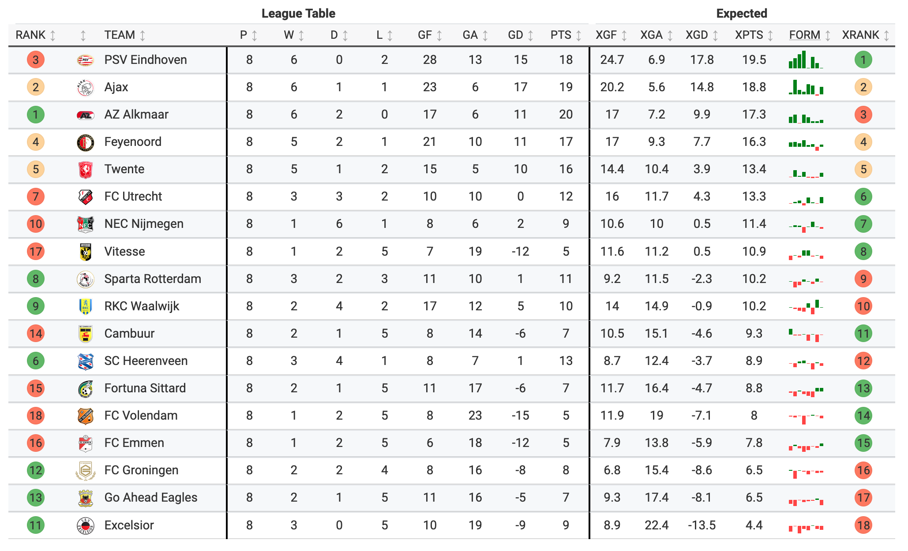
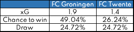
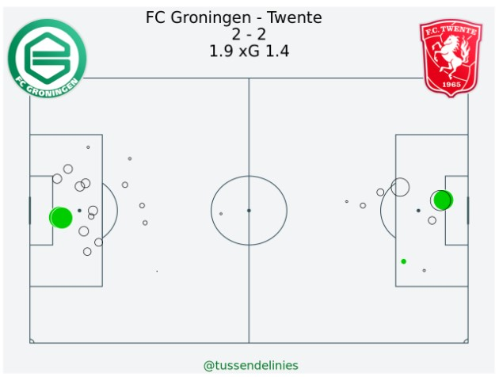

Expected Points

This post is about Expected Points
Read the Dutch version of this article here
You probably read already about it, or saw it in some tweet/picture/anything, Expected Points. From understat to Opta, they are all using it. There are some different ways to calculate it though. In this article I will tell you my method, the method we use for our dashboard at Tussen de Linies
#### XPOINTS? What can we do with xPoints and do we need it?
We can use xPoints to see where we may expect a team in the league table. In short: it is a way to show how well they perform this season, looking at their shots.
Raw xG numbers don’t say everything, as the quality of the chances plays a role as well.
AN EXAMPLE
Let’s take a look at the game FC Groningen against FC Twente. The game ended in 2-2 with xG 1.9 and 1.5. In the table you’ll see the chances for both teams to win.

As you can see, the xG of Groningen is 0.5 higher (almost 36%), but the chance to win is 86% percent higher. The size of the chances is what decides the difference.
HOW BIG ARE THE CHANCES?

Besides the two goals, Groningen has a lot of medium sized chances. Twente has three good chances, but not much else. For getting the chance to win and so the expected points, we will simulate those chances.
THE CALCULATION
For every shot we draw a random number between 0 and 1. Everytime this number is smaller than the xG of that shot, the shot becomes a goal. After we’ve done this for every shot in the match, we got a number of home- and away goals and so a result (home win/draw/away win). We simulate a match this way for ten thousand times. Each result is stored and after all the simulations we count the number of different results to determine the chance for both teams to win. It’s simple the perentage of simulations resulting in that specific result.
After we have those chances, we multiply the chance to win with 3 and the chance for a draw with 1 for both teams. So: Groningen 49.04% * 3 punten + 24.72% * 1 punt = 1.72
Those calculations will give us a number of points that we call Expected Points. Doing this for a whole season will give us an Expected Rank. In this match, Groningen didn’t got enough with there 1 real point, but over the whole season they got too many points.
THE PROBLEM(S)
Game state is very much resposible for the way a team acts. If you’re leading by an early goal, the urge to attack fades away. The opponent will attack instead and will get a higher xG with every shot they take. If they don’t score, they keep attacking without scoring. So the xG skews in their favour, even if their chances are poor. Scoring 2 or 3 goals from less than 1 xG in the beginning of the game will also have this result, as the opponent must attack and have a comfortable lead.
The experience learns us that over a whole season, xPoints is good in giving us a fair picture about the teams in a competition.
HOW DOES X PERFORM OVER TIME?
If you want to see a xPoints timeline of you’re favorite Eredivisie team, hit me up on Twitter!